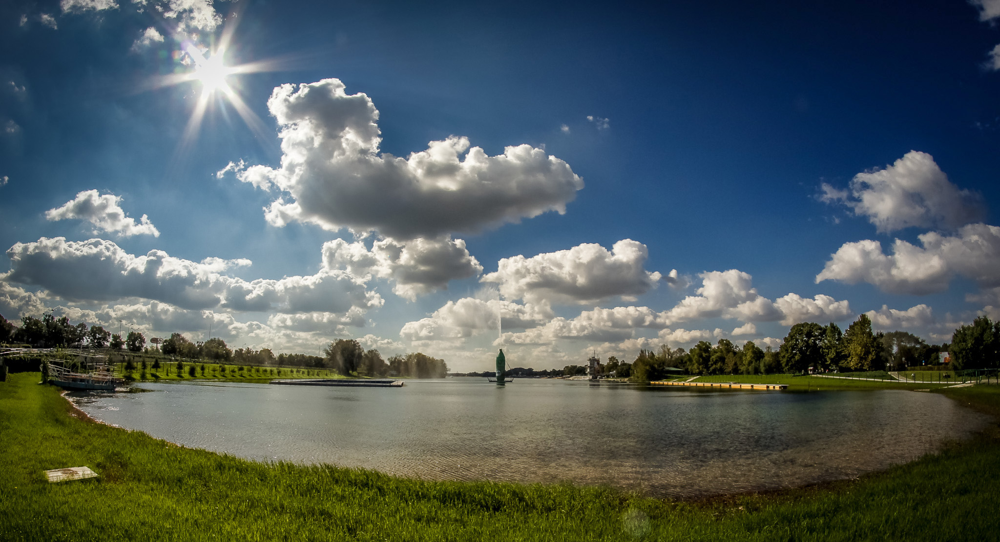
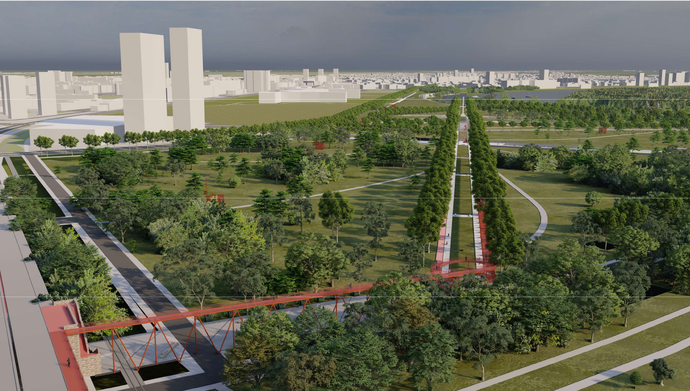
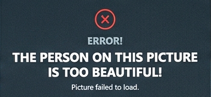

A huge lake and park known as Belgrade's "Sea." It has long pebble beaches, cafes, and tons of space for swimming, riding bikes, or playing basketball and other sports.

A huge, beautiful green space in New Belgrade right where the Sava meets the Danube. Perfect for evening strolls and looking across to old Belgrade.

"I've lived in Belgrade for almost 14 years. Even though it's not a lot I can still show you a lot of cool places and things to do here."